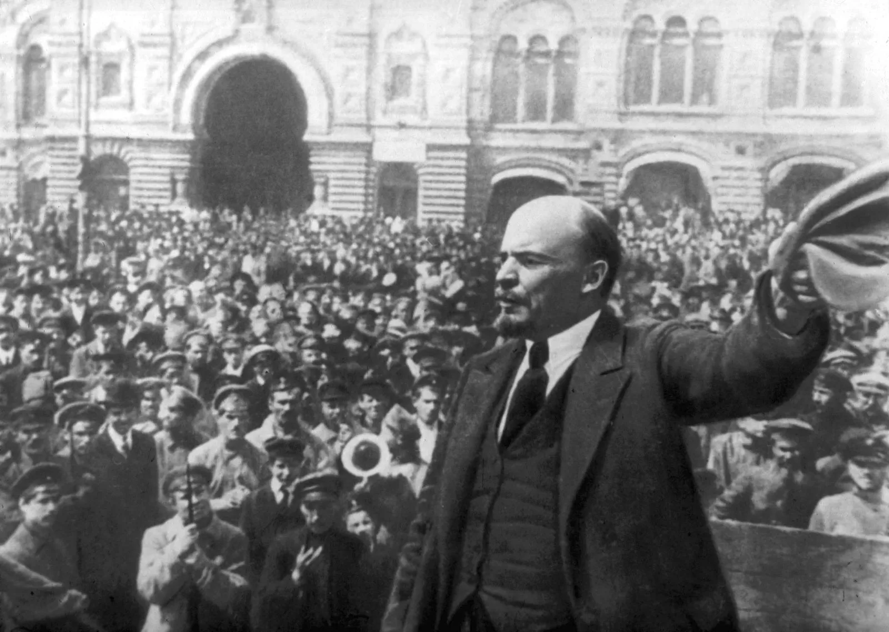

Though incomplete, these statements identify marginality as much more than a site of deprivation; in fact I was saying just the opposite, that it is also the site of radical possibility, a space of resistance. It was this marginality that I was naming as a central location for the production of a counter-hegemonic discourse that is not just found in words but in habits of being and the way one lives. As such, I was not speaking of a marginality one wishes to lose— to give up or surrender 150 YEARNING as part of moving into the center—but rather of a site one stays in, clings to even, because it nourishes one’s capacity to resist. It offers to one the possibility of radical perspective from which to see and create, to imagine alternatives, new worlds.
— Bell Hooks Marginality as a site of resistance
In graphic design, self-publishing is the conscious decision to release one's works into the public instead of going through traditional gatekeepers like print magazines or design companies. By enabling graphic designers to directly share their own aesthetic ideas and design philosophies with a larger audience, this promotes creative freedom and elevates various voices in the design community.
Social bookmarking techniques in graphic design involve the methodical arrangement and distribution of design materials, guides, and ideas, which efficiently builds a community library of visual inspiration and expertise. Through bookmark sharing on design platforms, practitioners add to a dynamic ecology of ideas and methods, bringing a range of viewpoints and design approaches to the creative world.
Creating webrings in the field of graphic design functions as a peer to peer method to make, distribute and collaborate.
In this rapid workshop we explore basic methods of publishing personal knowledge with free and opensource tools.
The workshop requires:and we compile these bookmarks files to make a Webring for the public school.
I came to this conclusion after thinking about a more personal knowledge database, which is not very pluralistic in nature. A webring is decentralised, although there is a need ofamoderator, he can change regulary.
Why Self Publish?
This exercise is not a merely a method to revolt against big-tech companies.
But a way to be self sustainable, independent and understand the importance of means of production to be a better maker.
Self publishing as I see it is a way to solve a problem, A way to be more creative with limitations of being in margins. By resist Bell Hooks was pointing at the possibilities that deprivity can provide, it might seem a bit handicapped to think that she was referring to a mighty revolution. I liked to translate her text to apply to my closest issues such as poverty of a designer or a maker. Which can stem from deprived access to resources, lack of network and affordability of tools. By not being constrained by any status qou, liability of established morality and pain of deprivation. By choosing the margins we change them from imposed condition to oppeness and possibilities (That Hooks defines).
We make ourselves a repository of resources a community, and learn/share the basics of web cultures.
How do they work
Some prompts to get you started thinking on the content you wish to share:
And these files will be linked to each other and an index site using a Java script script
After you make your webpage from the above options
We paste this below code in our html files
<div id='webringid'>
<script type="text/javascript" src="scriptURL/onionring-variables.js"></script>
<script type="text/javascript" src="scriptURL/onionring-widget.js"></script>
</div>